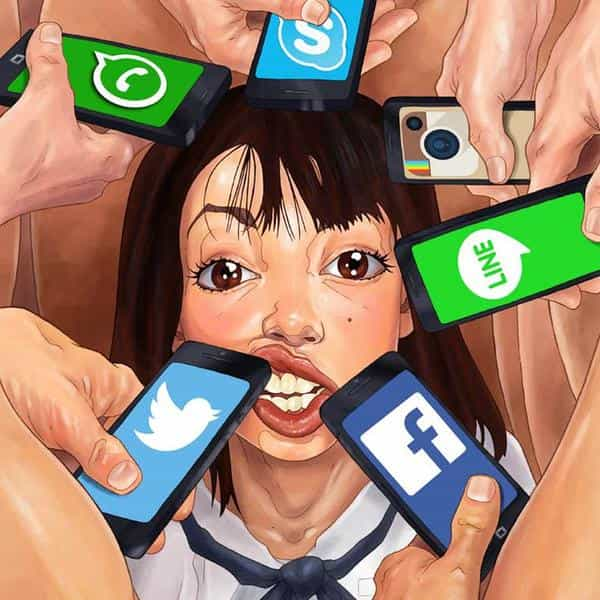

Daryush "Roosh" Valizadeh created ROK in October 2012. You can visit his blog at RooshV.com or follow him on Twitter and Facebook.


When the iPhone started gaining popularity, I wrote about how it makes women less capable of love. It puts them on such a thrilling roller coaster ride of attention and fleeting validation that the love of one man becomes just too boring. And now women are attempting to get that love back on social networking, through the very means that caused them to lose the ability to love in the first place.
A girl who shares a photo on Instagram, a status update on Facebook, or a tweet about her day is simply trying to receive love from people on the internet. There is no reason to share a photo with strangers unless in that moment you are feeling a lack of love, which is why it’s most commonly done when a woman is alone. When she’s experiencing a momentary feeling of emptiness or lack of attention, she shares a selfie and then relaxes from the soothing effects of dopamine as the likes and comments come in, all without having to understand or cater to the needs of others.

Unfortunately for the girl, this will not work in finding real love. She already damaged her love mechanism by swallowing whole all the depression-causing feedback loops that autistic Silicon Valley technologists threw at her, and now she’s trying to get it back through piecemeal bytes from people she ultimately doesn’t care about. It’s the same as crushing your leg with a sledgehammer and then using the same sledgehammer to bang it back into place. To save your life, a doctor will end up having to amputate the leg.
The only possible treatment for a woman is to completely withdraw participation from social networking. She must never share anything personal online. She must only follow other people without commenting. She must never anticipate or hope for a potential response that could spike her dopamine. Combined with a healthy search for a male partner, she may be able to love again, but we all know that this asks too much of the modern female. Your average woman will not be able to quit all her social networking accounts and observe so many other women getting a million likes from strangers while she receives none, but unless she does this, the odds of her being content with the love from one man are zero. She will become a love amputee.
It turns out that many men use social networking to feel love as well. If the intent of what you’re sharing is to receive attention, compliments, and validation, you’re starved of real-life love. When the only response to what you’re sharing is discussion about you, the internet has become your lover. This is one of the reasons I’ve been so incompetent with managing my Instagram account. Sharing a photo of myself, where the only response can be likes on my image or comments about me, is love-thirst behavior, but I am still a human being and sometimes experience moments where I feel a lack of love. I’m still capable of love in real life, but I know that using the internet to receive it will just damage that ability. It turns out that sleeping with so many sluts did less harm to me than if I had the habit of uploading a selfie every day.
If you want to predict whether the a woman you meet in the future will be satisfied by your love, ask yourself what trends you see with smartphone usage. Are women becoming more dependent on it or less? You already know the answer: women have showed absolutely no indication that they want to lessen their social networking usage, and if anything, they are doubling down to such an extent that they may even prefer it to normal friendships.
An entire generation of men have to suffer worsening relationships with women because a few hundred technologists wanted to create a utopia. Instead, they created a hell where the only time you’ll be able to feel a little bit human is while staring at a tiny computer in your hand.
This article was originally published on Roosh V.
Read Next: How To Play Real-Life Tinder